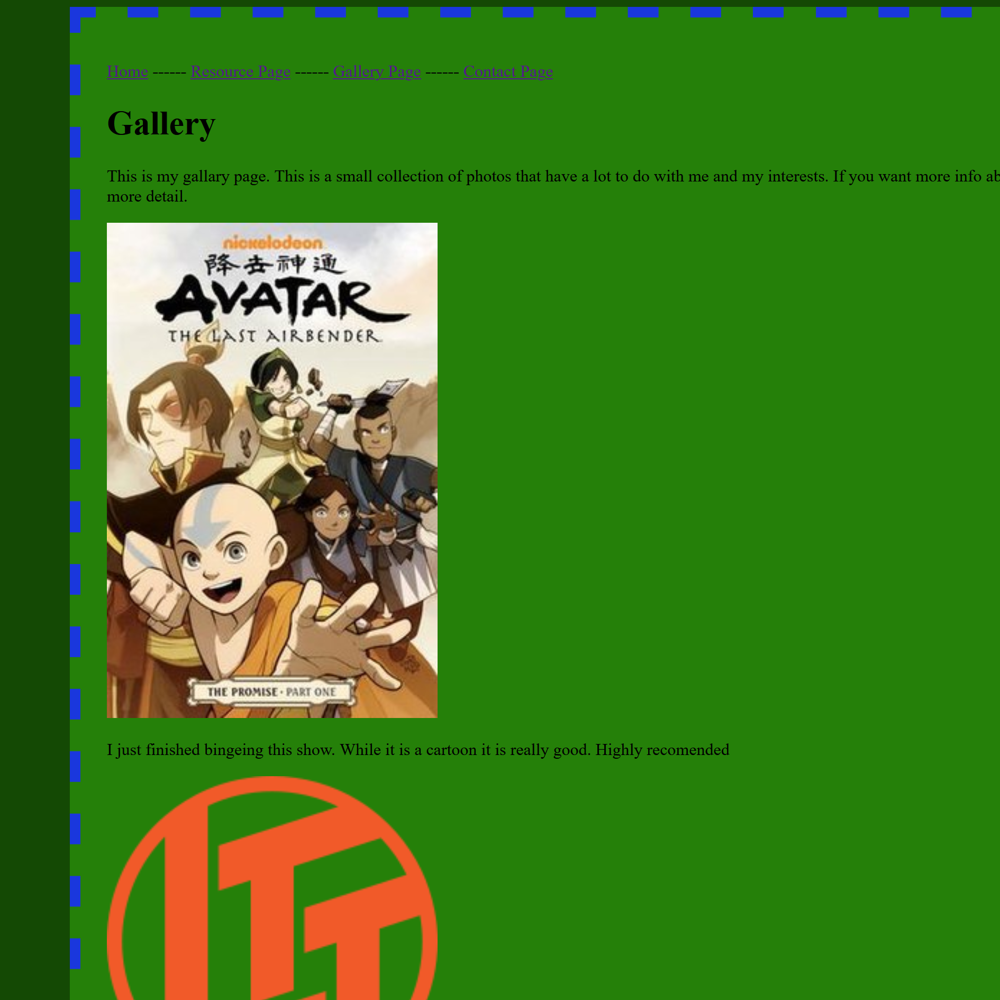

Here is my portfolio,
This is a small accumilation of some of my projects that I have done. You will find everything from major assignments to homework to class work and even a bit of my own endeavours. There is a varying amount of skill between each website but it does give a overall picture of what I am comfortable with. Try not to judge too much :)
MA: Project 1
What do you know? This was my first Web Design 2 Project. The details are pretty simple.

Mini-Project - Home Page Facelift
This was a mini HW project where I redesigned my rowing boathouse website. This was my first real exposure to responsive stuff.
MA: Mid-term Project
This was a group project for Web 2 but I completed the home page and the About Us sections.

CSS Hamburger Menu Demo
I had to edit one of my demos by adding a hamburger menu to my website. Nothing to complicated but a bit fun.

Web 1 - Final Project
This was my final for my Web 1 class. It has some places it could be improved but it has real spirit. I redid a old website.
Halloween Party Landing Page
This was a Halloween Party landing page. It was a fun project to play around with in Web 1. The font was a bot much.
JS Mess Around
This was my first adventure into JS on a webpage. It was fun for Web 1 and tought me alot back in the day.
Web 1 - Share your genius
This was a project for Web 1. It is pretty simple but it was challenging for me at the time I made it. It is a fun blast from the past.

Mini-Project - Themed Webpage
This was a simple landing page. Pretty quick project but you get the idea. When I made it, it was counting down to christmas.
Web 1 CSS Grid Challenge
This was my first exposure to css grids. You can see the first time skill at work here. There is a lot to be improved on but its a good first try.
Web 1 - Group Out in Nature
This was my first group project for Web 1. This was a look into enviroment and tested our ability to work together on a web page.

WEB - Final Project
This was my first web class final submission. Please ignore my face... This was my first big exploration into html (in the 8th grade).